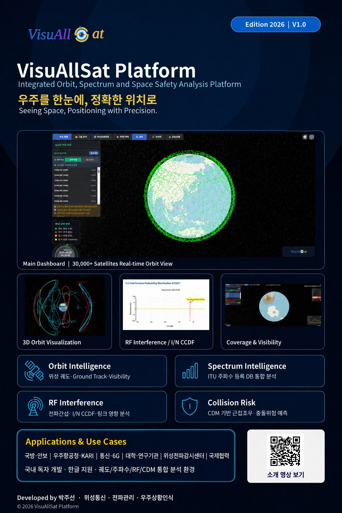

궤도 분석
- 위성 위치·속도 계산
- Ground Track
- Coverage 및 Visibility
- 국가·궤도·컨스텔레이션별 분류
- 3차원 궤도 시각화
VisuAllSat 개발자
위성통신·전파 분야 30년 경험과 10여 년의 독자 개발을 바탕으로 구축한
통합 우주상황인식(SSA)
플랫폼, VisuAllSat입니다.
Core Capabilities
Analysis Cases
전 세계 위성·잔해물 등 우주객체를 3D Earth Dashboard에서 시각화하고 국가·궤도·컨스텔레이션별로 분류합니다.
특정 위성의 지상궤적, 커버리지, 가시성을 계산해 임무 운용 시나리오를 검증합니다.
수천 기 규모의 메가컨스텔레이션 궤도를 일괄 분석합니다. 위성 수는 기준일에 따라 달라지므로 항상 최신 기준일을 함께 표시합니다.
ITU 위성망 등록정보와 링크버짓을 기반으로 간섭 전력, I/N, 보호기준을 분석합니다.
CDM(Conjunction Data Message)을 수집해 자체 계산 결과와 비교하고 최소 접근거리· 충돌확률을 산출합니다.
VisuAllSat Platform — Integrated Orbit, Spectrum and Space Safety Analysis

궤도·주파수·전파간섭·충돌위험을 하나의 화면에서 분석하는 국내 독자 개발 통합 SSA(Space Situational Awareness) 플랫폼입니다. 30,000기 이상의 위성을 실시간 3D로 시각화하고, ITU 주파수 등록 데이터베이스와 CDM 충돌위험을 함께 분석합니다.
유튜브에서 보기: youtu.be/5gi5mzkrIYU